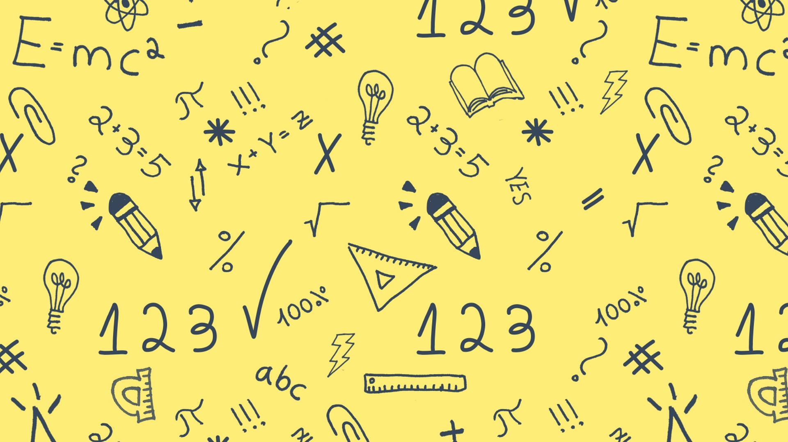

Welcome to our Fictional Education
|
|
|  |
Education is the process of facilitating learning, or the acquisition of knowledge, skills, values, morals, beliefs, habits, and personal development. Educational methods include teaching, training, storytelling, discussion and directed research. Education frequently takes place under the guidance of educators; however, learners can also educate themselves. Education can take place in formal or informal settings, and any experience that has a formative effect on the way one thinks, feels, or acts may be considered educational. The methodology of teaching is called pedagogy.
There are movements for education reforms, such as for improving quality and efficiency of education towards relevance in students' lives and efficient problem solving in modern or future society at large, or for evidence-based education methodologies. A right to education has been recognized by some governments and the United Nations.[a] Global initiatives aim at achieving the Sustainable Development Goal 4, which promotes quality education for all.
Formal education is commonly divided formally into stages such as preschool or kindergarten, primary school, secondary school and then college, university, or apprenticeship. In most regions, education is compulsory up to a certain age.
We are Strong. We are learning to the rigth.